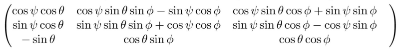
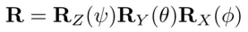
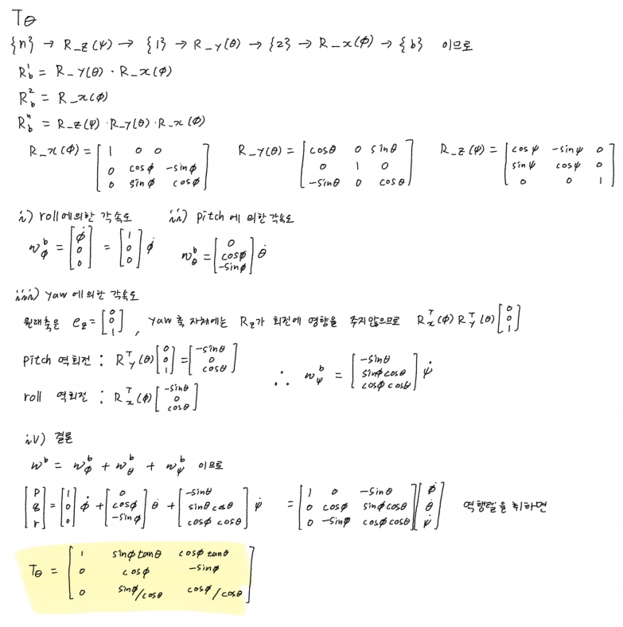
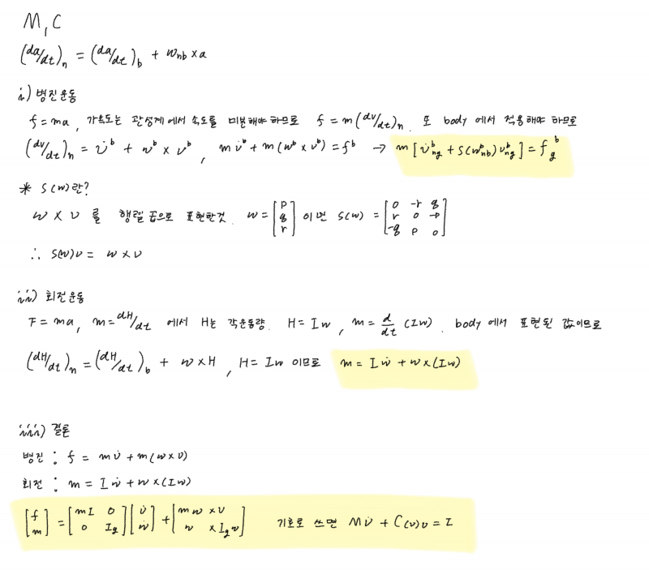
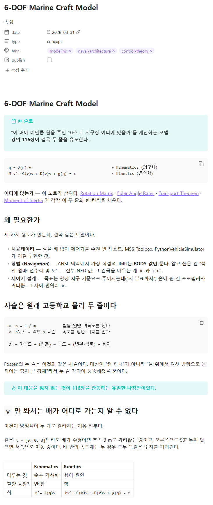
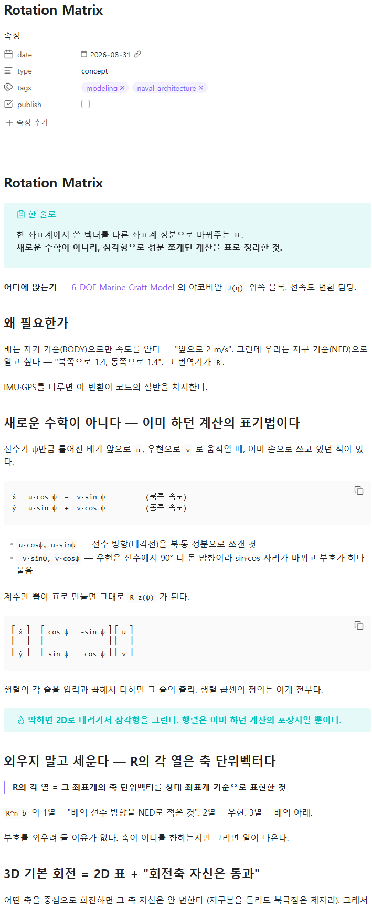
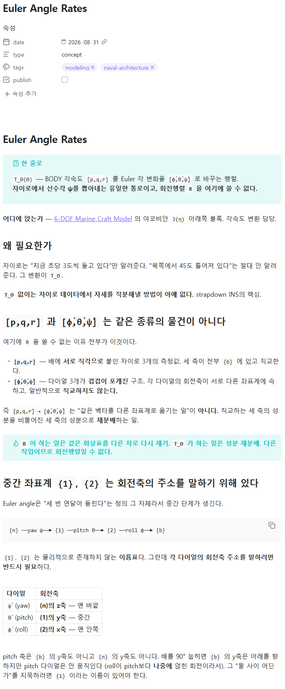
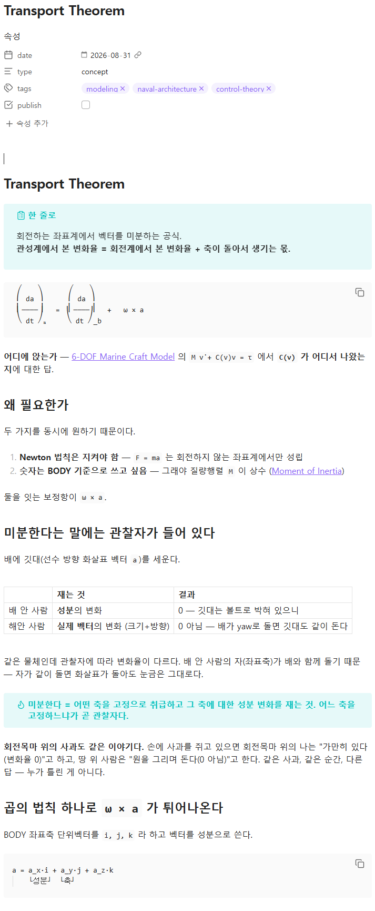

Weekly Study Report — 2026-09-04
Source
N:\개인\Archive\ANSL과제\내용정리 PPT\Weekly Study Report_26.09.04_전유식.pptx· 7 slides · 8 images
ANSL Undergraduate Research → Research Direction
한일 / What I did
- 제어공학특론 수강
- Kinematics — 회전행렬 R, 각속도 변환 TΘ
- Kinetics — Transport theorem, M · C(ν)
기록 / Notes
Kinematics
R은 orthonormal (열이 서로 직교, 길이 1)
- R⁻¹ = Rᵀ — 역행렬 계산이 필요 없음. 그냥 전치.
- 초당 수백 번 변환하는 실시간 항법에서 부담이 없음.
- 좌표계를 바꿔도 속력은 절대 안 변한다.
Rⁿ_b(Θ)를 외우지 않고 읽는 법
- 1열 = 선수 방향(u)의 기여 → φ가 하나도 없음 → roll은 선수 방향에 영향을 미치지 못함
- 3행 = 수직 성분(ż) → ψ가 하나도 없음 → 연직축으로 돌아도 축은 면하지 않음
각 축의 회전을 행렬곱으로 계산
- R_z(ψ) “z축 중심으로 ψ만큼” ← 부품
- Rⁿ_b “b의 값을 n의 값으로” ← 완성품

- Roll이 선수방향과 무관
- Yaw가 생겨도 연직축은 변하지 않음

T_Θ
- 자이로는 “지금 초당 3도씩 돌고 있다”만 알려줌(BODY). “북쪽에서 45도 틀어져 있다”(NED)는 자이로로 알수 없음.
- → TΘ 를 이용해서 자이로 데이터에서 자세를 적분 ([p,q,r] → TΘ → [pi_dot, theta_dot, psi] )
[p,q,r]
- 축 3개가 body좌표계에 동시에 존재, 각 축끼리 직교
- IMU로 측정 가능
[φ̇, θ̇, ψ̇]
- 각 축이 {n}, {1}, {2}에 흩어짐
- 각 축방향으로 움직이는 부품에 엔코더를 달아서 측정가능
TΘ가 하는 일 : 직교하는 세 축의 성분을 비뚤어진 세 축으로 재분배
- 완전히 다른 작업이므로 TΘ는 회전행렬일 수 없음.
중간 좌표계는 각 다이얼의 회전축 주소를 말하기 위해 필요함
- {n} ─ yaw ψ → {1} ─ pitch θ → {2} ─ roll φ → {b}
- ψ̇ 축 = {n}의 z축 / θ̇ 축 = {1}의 y축 / φ̇ 축 = {2}의 x축
Gimbal lock
- θ = ±90°에서 1/cos90° = 1/0. roll축과 yaw축이 같은 직선에 겹쳐 자유도 하나를 잃는다.
- → quaternion으로 해결 가능(뒷내용)
Kinetics
BODY - NED
- 변화율은 좌표계 기준이므로 body좌표계 기준 변화율과 NED좌표계 기준 변화율은 차이가 있다.
- → 등속 회전시 body좌표계 기준 전진하지만 NED좌표계에서는 회전
- 미분한다 = 어떤 축을 고정으로 취급하고, 그 축에 대한 성분 변화를 측정
- →어느 축을 고정하느냐가 곧 관찰자
- ᵇd/dt 는 배의 축을 고정, ⁱd/dt 는 관성계(NED좌표계를 관성계로 가정) 축을 고정.
transport theorem
- 필요한 것 : ⁱd/dt ← 관성계(NED)에서 잰 변화율
- 측정 가능한것 : ᵇd/dt ← 센서도, 상수 M도 전부 BODY
- → 이로인해 body에서 반영되지 않는 회전(각도 변화)을 transport theorem으로 보정
예시
- 배에 깃대를 생각했을때 깃대는 배 위 사람에게는 절대 안 움직인다 (변화율 0).
- 해안 사람에게는 배가 yaw로 돌면 깃대도 같이 회전한다 (변화율 ≠ 0).
- 배 안 사람의 자(좌표축)가 배와 함께 돌기 때문 — 화살표가 돌아도 눈금은 그대로다.
NED에서 본 변화율 = body에서 본 변화율 + 축이 돌아서 생기는 몫
- ⁱd/dt (a) = ᵇd/dt (a) + ω × a
외적인 이유
- 결과가 ω에 수직 → 회전축 방향으로는 안 움직음
- 결과가 a에 수직 → 길이가 안 변함 (방향만 변함)
- 크기 = |ω||a| sinφ → 축에서 멀수록 빨리, 축과 나란하면 안 움직임
Newton-Euler
- 가정 : 배는 강체 , NED = 관성계
- 병진(Newton) : m v̇ + m S(ω) v = f
- 회전(Euler) : I_g ω̇ − S(I_g ω) ω = m
- →왼쪽 첫 항이 M ν̇, 둘째 항이 C(ν)ν, 우변이 τ 가 된다.
C(ν)ν는 실제 힘이 아님
- 회전하는 좌표계에서 방정식을 쓰기로 한 선택의 대가.
- 좌표축 회전 보정
손 유도






막힌 것 / Blockers
없음